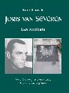

> nieuwsbrief > 2002 - nr 3
| Uitnodiging tot het Derde colloquium Joris van Severen |
| jaarboek 6 |
| mededelingen |
| Joris van Severen. Een apologie |
| 20 mei 2002 |
Uitnodiging
tot het
Derde colloquium Joris van Severen |
| datum | zaterdag 21 september 2002 |
| plaats | Domein Ruytershove, Manegemstraat 37, 8870 Izegem |
| aanvang | 9.30: aankomst + koffie |
| einde | voorzien omstreeks 18.00 uur |
programma:
welkomstwoord
door de hr. Luc Seynaeve, voorzitter Stichting Joris van Severen.
inleiding
door de hr. Vik Eggermont, moderator, met betrekking tot het thema van het
colloquium, m.n. Het sociaal project van het Verdinaso.
referaat
door drs. Romain Vanlandschoot: Van syndicalisme naar corporatisme. De
rol van Juul Declercq in de jaren 1925-1932.
bezoek
aan het vlakbij gelegen voormalige woonhuis van Juul Declercq met de aldaar
in 1992 aangebrachte gedenksteen.
gezamenlijk
middagmaal (facultatief).
referaat
door drs. Fank Judo: De bronnen van het solidarisme en het corporatisme
van Joris van Severen.
referaat
door drs. Edwin Truyens: De parallellen tussen het nationaalsolidarisme
van Joris van Severen het het "nationale socialisme" van Hendrik
de Man.
Na
elk referaat was er gelegenheid zijn tot het stellen van vragen. Gezien het
colloquium het karakter van een besloten bijeenkomst droeg, was voorafgaande
aanmelding noodzakelijk.
In het kader van het colloquium werd door de vzw Stichting Joris van Severen een beperkte tentoonstelling opgezet rondom het thema van het colloquium, geput uit het archief van de onlangs overleden Rogier de Smet.
Mededelingen |
Mededeling
van de redactie
Dit
colloquiumnummer van de Nieuwsbrief Joris van Severen wil uitnodigen tot
deelname aan en voorbereiden op het colloquium. De gewone Nieuwsbrief-rubrieken
vervallen in dit nummer grotendeels, om plaats te maken voor bijdragen bedoeld
als inleiding tot het thema van het colloquium.
De
leden ontvingen ondertussen wel reeds - einde mei - het zesde Jaarboek Joris
van Severen, waarover verder in dit nummer een persbericht. Voor oud-leden
geldt nog tot einde juni e.k. de ledenprijs van 20 EUR (inclusief
verzendkosten). Vanaf 1 juli geldt de boekhandelsprijs van 23 EUR + 3 EUR
verzendkosten.
Joris
van Severen. Een Apologie
Zo
luidt de titel van het keurig uitgegeven, 128 pp. tellende essay van de hand van
erenotaris Rudy Pauwels, stichtend lid van onze vzw. U leest er méér over
verder in deze Nieuwsbrief. Dit boek verschijnt naast het Jaarboek
Joris van Severen 6, dat de leden ondertussen reeds toegstuurd kregen. Zij
kunnen Joris van Severen. Een Apologie verwerven tegen de fel
gereduceerde ledenprijs van 10 EUR (verzendkosten inbegrepen). Voor niet-leden
geldt de boekhandelsprijs van 12 EUR, te verhogen met 2 EUR verzendkosten,
hetzij in totaal 14 EUR. Bestellen via overschrijving van het overeenstemmend
bedrag op rekening 000-1705814-69 t.n.v. Studie- en Coördinatiecentrum Joris
van Severen, 8900 Ieper, met vermelding "Apologie".
Errata
In
het vorig nummer van onze Nieuwsbrief is de zetduivel er in geslaagd weer
lelijk huis te houden. Wie er ook de e-versie op na sloeg zal
vastgesteld hebben dat aan dit euvel alsnog verholpen werd. Niettemin alsnog
onze excuses vergezeld van de noodzakelijke errata. Vooral in de bijdrage Le
meurtre de Joris van Severen liep het de spuigaten uit; we overlopen de
tekst (pp. 10-13); ook even in de Sprokkels op p. 20:
p.
10, lijn 4: qui va suivre (i.p.v. van suivre); lijn 5: témoin
aculaire (i.p.v. acculaire); lijn 8: qu'on n'oublie
jamais (i.p.v. n'oubli).
p.
11, lijn 9: nous conduisit (i.p.v. conduisut); lijn 18: le
voyage (i.p.v. ke voyage); lijn 34: nous traièrent (i.p.v.
traiérent).
p.
12: lijn 4: comprend à demi-mot (i.p.v. comprend - demi-mot);
lijn 12: manque de discernement (i.p.v. descernement); p. 30:
à l'honneur de l'armée française (i.p.v. l'hooneur
de l'armée franàaise); lijn 31: payer pour (i.p.v. por);
lijn 34: n'étaient (i.p.v. neétaient).
p.
20, lijn 5: fascistisch (i.p.v. fasicistisch); lijn 7: verschil
(i.p.v. verschik).
Terre
et Peuple
"Les
4 Bannières Terre er Peuple de Flandre-Artois-Hainaut, Picardie
et Wallonie s'associent pour rendre hommage à Joris van Severen (...).
Assassiné à Abbeville le 20 mai 1940, par le lieutenant René Caron et le
sergent chef François Mollet de l'armée française en déroute. Rendez-vous à
11 h à l'entrée nord du cimetière d'Abbeville pour la cérémonie de souvenir
organisée par l'association "Abbeville", avec la Fondation Joris van
Severen." Aldus de oproep tot deelname aan de bedevaart in het tijdschrift
van Terre et Peuple; deelname die in een nog niet helemaal harmonische
samenwerking gebeurde met de inrichtende vzw Abbeville.
Goed
om weten is dat dezelfde vereniging Terre et Peuple reeds vroeger in het
voorjaar een lezing inrichtte te Gruson nabij Rijsel waarop Leo Camerlynck,
vicevoorzitter van de vereniging/stichting ZANNEKIN, handelde over De 17
provinciën van de Nederlanden.
Delta-Stichting
Op
uitnodiging van de Delta-Stichting sprak ons bestuurslid en
jaarboekauteur Kurt Ravyts op 27 mei j.l. te Gits over Joris van Severen:
modernist in traditie of traditionalist in moderne tijden?
Abbeville-commissie
ad-hoc
Op
zaterdag 18 mei j.l. hield deze commissie haar jaarlijkse korte
herdenkingsplechtigheid voor de Brugse slachtoffers - Louis Caestecker, Marie
Ceuterick, Jan Ryckoort en Joris van Severen - van 20 mei '40 te Abbeville. De
plechtigheid ging door in de poort van het Bourgoense Cruysse waar een
gedenkplaat herinnert aan het lot van de vier Bruggelingen.
Signalement
Gekooid
verlangen. Zo luidt de titel van de bundel bijdragen en de catalogus van de
gelijknamige tentoonstelling gewijd aan het surrealistische werk van Rachel Baes
en Jane Graverol. Patrick Spriet (pp.20-33) stond in voor het hoofdstuk gewijd
aan Rachel Baes, Sheherazade van het surrealisme, waarin ook haar
verhouding met Joris van Severen op een zeer gedegen en serene wijze uiteengezet
wordt. We komen er mettertijd op terug in de rubriek Sprokkels.
Joris van Severen. Een apologie |
"Ik
werd geboren te Deinze op 23 april 1932 uit Jeanne van Severen - die door
Verriest steeds Johanna werd genoemd, - de zuster van Joris van Severen - en
Fernand Pauwels, die onder de schuilnaam Marnix van Gavere, enkele zeer innige
gedichten naliet die in heel Europa vertaald werden."
Met
deze inleidende zin zet de auteur van meet af aan de toon van zijn Apologie. Hij
was amper acht jaar oud toen zijn oom op 20 mei 1940 te Abbeville om het leven
gebracht werd.
Maar al de tijd sinds toen is hij als het ware dag na
dag Joris van Severen nabij geweest en heeft hij gepoogd binnen te dringen in
diens gevoels- en denkwereld. Hij heeft als het ware opnieuw Van Severens
voetsporen gevolgd, vanaf zijn jeugd te Wakken en in het Gentse
Sint-Barbaracollege, al over de vernederingen van het IJzerfront tijdens de
Eerste Wereldoorlog, naar de universiteit en jaren van het Interbellum met hun
felle vernieuwingsdrang die concreet gestalte aannam in het Verdinaso.
De auteur erfde de geestelijke nalatenschap van Joris
van Severen, waaronder ook zijn Oorlogsdagboeken, zijn notities en
aantekeningen omtrent zijn persoonlijke Werdegang en het leven van zijn
beweging. Elk van deze episodes komen met hun wisselende aspecten en van uit
meerdere invalshoeken aan bod in deze Opstellen om Joris van Severen beter te
doen begrijpen. Daarnaast erfde hij ook de bibliotheek van Joris van
Severen, waardoor hij als geen ander in de mogelijkheid was binnen te dringen in
Van Severens intellectuele leefwereld. Van deze belezenheid, die steeds weer
terug leidt naar de tenoren van het Europese geestesleven waarbij Joris van
Severen te rade ging, getuigen deze opstellen op een weergaloze wijze.
Vanzelfsprekend is het door de auteur gehanteerde
uitgangspunt - dat getuigt van een sterk doorleefde persoonlijke betrokkenheid -
in hoge mate subjectief. Deze vaststelling geldt overigens voor alle
egodocumenten en hoeft geen afbreuk te doen aan hun excentrieke waarde. Maar hoe
persoonlijk ook gekleurd en soms zelfs verkleurd ze ook misschien zijn, ze
vertonen hetzelfde soort karakteristieken die alle herinneringen aan Joris van
Severen blijken te kenmerken: deze van bewondering, evenzeer als verwondering
voor een uitzonderlijke persoonlijkheid die in de harten van zovelen is blijven
leven.
Rudy Pauwels is Doctor in de Rechten en
Licentiaat in het Notariaat (RUG), Gegradueerde rechtsvergelijking (EGKS-Luxemburg),
Gewezen assistent RUG, Gewezen voorzitter Regionale Raad Nederlandstalige
Notarissen bij de Koninklijke Federatie van de Notarissen van België, thans
erenotaris. Mede-auteur Hugo Verriest - Joris van Severen.
_________________________
Joris van Severen. Een Apologie, telt 128
pagina's en vertoont dezelfde keurige vormgeving als de Jaarboeken Joris van
Severen. Leden kunnen het verwerven tegen de speciale ledenprijs van 10 EUR
(verzendkosten inbegrepen). Voor niet-leden geldt de boekhandelsprijs van 12 EUR,
te verhogen met 2 EUR verzendkosten, hetzij in totaal 14 EUR.
6e Jaarboek Joris van Severen |
Volg de link 'jaarboek' voor een korte kennismaking met de inhoud van het einde mei verschenen nieuwe - zesde - Jaarboek Joris van Severen.
20 mei 2002 |
Traditiegetrouw
laten we n.a.v. de Abbevillebedevaart onze rubriek 'Herinneringen' wijken voor
de bezinningstekst die sinds jaar en dag door Alfons van Opstal ten behoeve van
de bedevaarders geredigeerd wordt. Fons - die in juni a.s. zijn 90e verjaardag
viert - behoort tot de laatste falanks die Van Severens militantenorde gestalte
gaven.
Vrienden: 20 mei een bezinningsdag!
Welhaast staat ge weer verzameld op de heuvel van
Abbeville, waar beneden de stad de Somme vloeit, de rivier die de Lage Landen
scheidt van het Zuiden. Op 25 mei zult ge daar weer rond het graf staan waar
onze leider Joris van Severen en Jan Rijckoort samen hun laatste rustplaats
hebben.
Hoe onbegrijpelijk toch! Als broers door
omstandigheden en idealen in hun levensweg samengekomen en door nog meer
uitzonderlijkheden die zware beproeving ondergaan. Een gebeuren waarop menselijk
redeneren geen vat kreeg. Hoe onnaspeurbaar dat geschieden. Misschien had het
ook wel gekund, dat ze tussen 1914 en 1918 samen de dood hadden gevonden op de
IJzervlakte. Hun tijd was toen echter nog niet gekomen. Er wachtte hen na 1918
nog een taak, belangrijk en welbepaald. Nu weten we dat die fronttijd toen voor
deze jonge idealisten een bezinningstijd was, en blijvende sporen heeft
nagelaten voor hen, hun volk, voor Dietsland. Welk een charisma is over Joris
van Severen verder neergestreken. Inzicht en oordeel, zedelijke grootheid,
politiek, cultureel en staatkundig doorzicht. Er was een wijs man tussen ons
opgestaan, tot leiding geven geschoold en begenadigd. Te laat en zeker
onvoldoende beseften wij wie hij wel was. En nu, wat verder in het geschieden,
begrijpt zijn volk van de Nederlanden nog steeds niet, wie hen weer door laffe
moord ons ontnam.
Wij hebben onvoldoende aangevoeld, het Godsgeschenk
dat in zijn persoon ons leidde en begeesterde. Hoe hij sprak over het verleden
en de groten uit onze geschiedenis, en zijn vast geloof in de gemeenschap van de
doden en de levenden.
Wij blijven hem dankbaar voor alles wat hij ons
voorhield en overtuigde. Naar wie anders zouden wij gegaan zijn? Ook onze ouders
hadden nooit zulke taal horen spreken, waren nooit op die manier aangesproken
geweest: we moesten aristoï, de besten worden, ook in het dagdagelijkse leven.
Hoe dankbaar om dit alles was ook Jan Rijckoort,
vooral dan omdat Joris van Severen hem als het ware uit het proletariaat met
zijn marxistische begrippen naar huis had gehaald. Jan was immers jaren voordien
verbindingsman geweest tussen de Belgische Communistische Partij en Moskou. Toen
we op zekere zondag samen te Brussel in een politiecel zaten, vertelde hij ons
in vertrouwen en blij te moede hoe Joris van Severen hem tot een andere
levensopvatting had gebracht; hem het leven liet zien van de andere zijde. Hij
verwoordde wat bij de Dinasomilitanten werd beleefd: dat wij niet leefden van
brood en het materiële alleen, maar ook in een vast vertrouwen voor de toekomst
en in een samenleving in rechtvaardigheid en dienstvaardige samenhorigheid, een
samenleving van hoop en geloof in een betere wereld.
Hoe zouden wij toen kunnen vermoeden hebben dat Joris
van Severen en Jan Rijckoort samen ten prooi zouden vallen aan bandeloze wanorde
en schaamteloze rechteloosheid. God hebbe hun ziel. Uw aanwezigheid op deze dag
is weer een teken van hoop.
Fons van Opstal
In memoriam
Wel heel laattijdig vernamen we het overlijden van de
Kortrijkse Verdinaso Andre Velghe. Hij werd geboren op 14 juni 1914 en
overleed te Kortrijk op 27 december 1998.
In onze eerstvolgende rubriek Sprokkels steken
nog een paar aanhalingen met betrekking tot de verdiensten en de rol van Raf
Renard die einde vorig jaar zijn negentigste verjaardag mocht vieren. In die
Nieuwsbrief zullen ze helaas te laat aan bod komen om onzerzijds als
huldeblijk te fungeren. Raf Renard (°24 november 1911) overleed op 18 april
2002. In zijn jeugd werd hij als flamingant gevormd door Maurits Geerardyn, die
toen in zijn geboortedorp Rollegem onderpastoor was. In de jaren '30 was hij
actief in het Verdinaso en goed bevriend met Joris van Severen. Na 20 mei '40
trok hij zich uit de beweging terug, maar in de jaren '60 speelde hij een
belangrijke rol in de Belgische staatkundige ontwikkelingen. Aanvang de jaren
'80 werd hij president van de Orde van den Prince.
Walter Thiry (Voorburg 7 juli 1919-Antwerpen 1
mei 2002). Geboren in het Nederlandse Voorburg - waar zijn vader Antoon de
repressie tegen het activisme ontliep - zou Walter in diens idealistische
voetsporen en als DMO'er zijn man staan. Zolang zijn gezondheid het toeliet
ontbrak hij nooit op de bedevaart naar de graven van Joris van Severen en Jan
Rijckoort.
Voorbereidend op het
|
De
"Staat in de Staat"
Rudy Pauwels, St.-Martens-Latem
De Grieks-Latijnse oudheid heeft steeds naast
de slavernij, de vrije arbeiders en hun verenigingen erkend. In Athene
verleenden de wetten van Solon aan de corporaties een bindende juridische
kracht.
Rome kende onder de Etruskische koningen (Numa
Pompilius, 715-672) collegiati, vaklui die zich onder de bescherming
stelden van eenzelfde godheid, beschikten over een eigen "huis" en
gezamenlijke erediensten hadden. Ze vormden de oorsprong van de binding tussen
de latere corporaties en congregaties.
De keizers Trajanus en Alexander Severus poogden dan
de corporaties instrumenten van hun regeringen te maken en onderwierpen
de nieuwe corporaties aan de goedkeuring en het toezicht van de senaat.
Dit zou zich in de geschiedenis herhalen: macht van de
zelfstandige versus onmacht van de gebonden corporaties. Met het verdwijnen van
de slavernij onder de steeds grotere invloed van het christendom en een steeds
groter dirigisme van de keizerlijke economische politiek, was iedere arbeider
verplicht aan te sluiten bij een collegium van zijn beroep. De
corporatieve statuten, gesanctioneerd door de staat, hadden bindende kracht.
Deze organisatievormen van de vrije arbeid verdwenen
met de Germaanse invasie. Men zal moeten wachten tot de 10e -11e eeuw om een
stedelijke economie naast de landbouweconomie tot stand te zien komen. De twee
brandpunten van de stedenbeweging in het Europa van toen waren Vlaanderen (sinds
de 10e eeuw) en Italië (10e en 11e eeuw). De stedelijke republieken, die elkaar
als spoedig beconcureerden.
Toen ontstonden de nieuwe verenigingsvormen van
handelaars: de gilden en later de Hanzen, ontstaan in Duitsland
en Engeland.
Vanaf de 11e eeuw bloeiden binnen de stedelijke
economieën de godsdienstige confrériën op en komen de corporaties
tot stand, die hun volle bloei zullen bereiken in de 13e eeuw.
Vanaf de 14e eeuw scleroseren de
corporaties in Frankrijk onder druk van de monarchistische centralisatie
van het ontstaan van de manufactures, die een technisch antwoord brachten
op de toenmalige grootindustrie.
Tijdens de 18e eeuw zijn de corporaties
weggekwijnd. In Frankrijk onder de wetten van Turgot (1776), baron d'Allard en
vooral Isaac René le Chapelier (1791). Engeland en de Nederlanden volgden de
Franse trend. Maar gedurende de 19e eeuw leiden ze nog een kwijnend bestaan in
Duitsland en Oostenrijk en in Rusland zelfs tot in 1917.
Tijdens de 19e eeuw wordt in antwoord op het
kapitalisme het syndicalisme tot stand gebracht, maar talrijke "sociale
filosofen" zochten ook naar een nieuwe bloeiwijze voor de corporatieve formule.
(b.v. René de la Tour du Pin in Frankrijk en Mgr. Ketteler in Duitsland).
Een bijzonder plaats in de ontwikkeling van het corporatiewezen dient toegekend te worden aan de commerciële overzeese compagnies. In Frankrijk met Colbert en de Compagnie française des Indes orientale (van 1664 tot 1674), in 1719 opgenomen in de Nouvelle Compagnie des Indes. In Engeland met de Engelse compagnie van Oost-Indië (1599) en de Wes